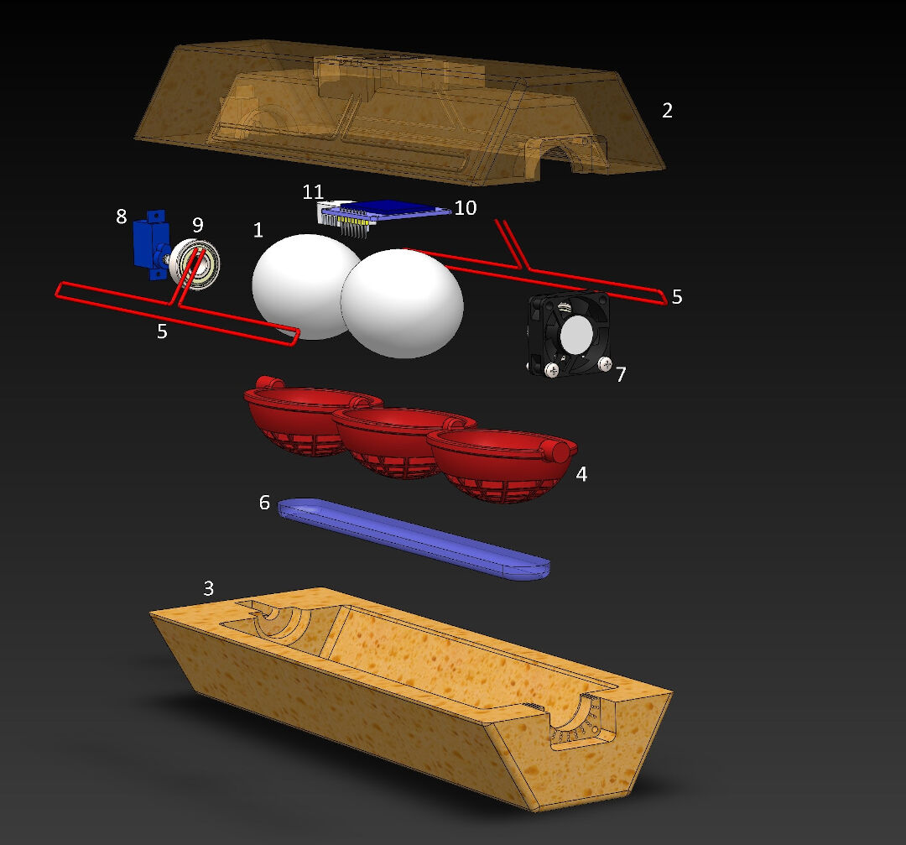

Principles and Practices
Individual assignment
- Plan and sketch a potential final project
Learning outcomes:
- Communicate an initial project proposal
Have you:
- Sketched your final project idea/s
- Described what it will do and who will use it
THIS PAGE IS OBSOLETE NEW PROJECT HERE!
Electronic Components Vending Machine:
For my final project, I decided on developing a very necessary Fab Machine: a vending machine for electronic components. I hope this machine will relieve Fab Managers from the burden of doing inventory and selling components, as everything will happen automatically.
Currently, electronics vending machines use the soda/snack vending machine platform. I believe that besides the high cost of such machines and their excessive footprint, they are prohibitive equipment, especially in small labs.
The other thing that bothers me is the necessity to repackage the electronics to be sold. That in itself is a boring task that should be avoided as it creates waste from packaging material and time waste to prepare the packages.
The payment system should be one that uses virtual currency to eliminate yet another managerial task. With electronic payment, everything will be automatically accounted for without human intervention. During my stay in China, I came across the WeChat and Alipay payment systems. These systems allow you to pay for virtually everything in China.

Machine Description:
The machine will use current electronic reels used for electronics packaging to be fed on pick and place machines. The DIY Pick and Place below illustrates the reel tapes system I would like to incorporate.
Because sometimes it's not possible to stock such quantities of electronics in a Fab Lab, the machine should also be able to use already cut electronics packaging strips stored in the machine itself.
I plan to use a guide as in PIC. 02 to guide the stripes along the machine;

Sketch:
Parts:
- Reel
- Reel support
- Gear and motors
- Cutter
- QR code
- Dispenser
- Site
- Control
User steps:
- User scans QR code (leads to app/site)
- User login
- From App, user selects desired components and quantities
- User confirms/pays for items
- Machine supplies and cuts component tape
- Component falls to collecting points
- User collects component
Manager Steps:
- Manager feeds machine with new components
- Manager updates inventory through software, with price, quantity, and type
Updates 1
Along the course of Fabacademy, I changed my mind about the Final Project. Click here for the updated page where you can see the Incubator.

Updates 2
I know it's getting old. Check new update here. It's going to be an Irrigation Controller.